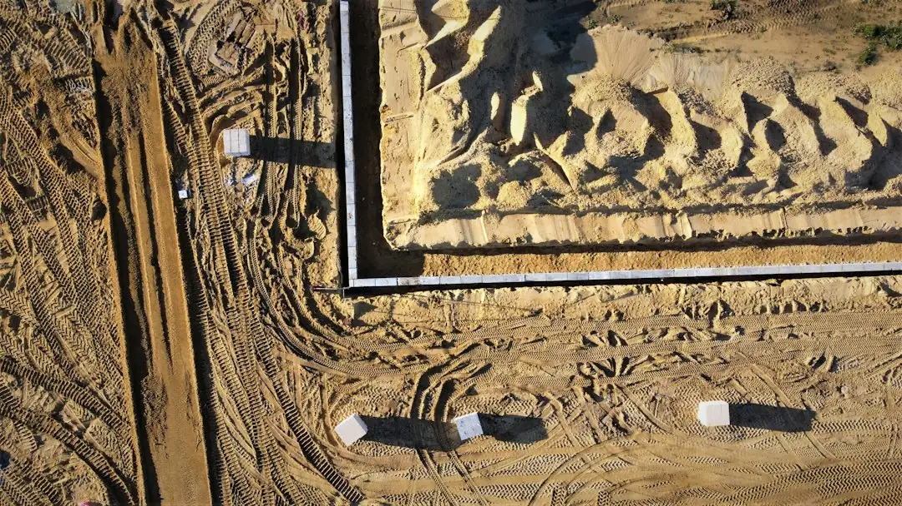

For Perth projects, wall choice usually turns on retained height, ground type, drainage, access and approvals. The published guide gives a broad installed cost indication of roughly $250-$600 per square metre of wall face, excluding GST, excavation, drainage and difficult access. It also notes that WA permit checks commonly begin once a wall retains more than 0.5 metres, with AS 4678 and BA3 design compliance relevant for engineered walls.
For homeowners comparing retaining walls perth options, the useful starting point is wall height, soil setting, drainage path, access and the approval pathway for the block.
Retaining Walls Perth Explained
Perth Retaining Walls presents the decision around Perth ground conditions: sandy coastal plain blocks, Darling Scarp foothills, shallow soil over rock, wet winter drainage and walls that may connect with building work or boundaries. A retaining wall has to hold ground, shed water and fit the approval rules for the exact site.
The material shortlist includes limestone, post-and-panel, besser block, timber sleeper, rock and boulder walls. Ask what the wall must do before asking which material looks best. A low garden terrace is a different job from a long driveway wall, a building pad edge or a slope where drainage and access shape the design.
- Height: confirm the retained height, not only the visible face.
- Ground: note whether the site is sandy, rocky, sloping or close to limestone.
- Access: tell the contractor about narrow entries, steps, fences and excavation limits.
- Drainage: ask how subsoil water will be collected and discharged.
Choose Materials By Fit
Limestone is described in the published guide as Perth's most common retaining wall material, with local quarrying and suitability for the sandy Swan Coastal Plain. That does not make it automatic for every job. The same guide points to post-and-panel concrete systems for taller or longer runs, timber sleeper for low garden terracing, and other options where budget, wall height and ground conditions justify them.
Panel and post retaining walls can suit repeatable lines, precast concrete retaining walls or longer boundaries. Besser block may suit a more built-up finish once design and structural work are resolved. Rock or boulder walls may belong in landscape-led settings. The quote conversation should connect wall system, retained height, access and compliance.
For another compact crawl path on the same topic, this Perth retaining wall planning guide sets out local wall choices before contractor discussions.
Check Permits Early
The published guide states that, in Western Australia, a retaining wall generally needs a building permit once it retains more than 0.5 metres of ground. It also notes that a wall of any height can still need approval if it is tied to other building work, affects or protects adjoining land, or sits on a boundary wall or substantial dividing fence. Confirm the position with the local government before works start.
Engineered walls bring design documentation into the conversation. The guide names AS 4678 and the Certificate of Design Compliance, BA3, process as items to understand before quotes. Ask who is responsible for drawings, engineering input, permit lodging, inspections and any changes requested by council.
- Ask whether the quote includes permit related documentation or only construction.
- Ask what happens if council requests design changes.
- Ask whether the wall affects a neighbour's land, fence line or building work.
- Keep written records of the agreed scope and exclusions.
Read The Quote Closely
The guide gives a broad installed indication of roughly $250-$600 per square metre of wall face, depending on material, height and access. It also says those figures exclude GST, excavation, drainage and difficult access, so a low headline rate may not reflect the finished project.
A stronger quote separates the visible wall from support tasks. Excavation, spoil removal, drainage, engineering, permit work and reinstatement can all change the final price. For retaining wall supply and installation, ask for enough detail to compare like with like, especially when one contractor includes drainage and another leaves it as a provisional item.
Compare the wall type, approximate wall face area, access assumptions, drainage allowance and approval responsibilities. If the scope is uncertain, ask what information would turn the estimate into a fixed-price written quote.
Who This Applies To
This guide is for Perth homeowners planning a new wall, replacing a failing wall, reshaping a sloping block or comparing materials for a garden, driveway, building pad or boundary edge. It is most useful before the first site inspection, when measurements, photos and approval questions can still be gathered.
Coastal sand plain projects may centre on holding level ground or stopping a sandy face from ravelling. Foothill projects around Kalamunda and Roleystone may involve steeper slopes, shallow soil over rock and winter drainage questions. The published guide also names Swan Valley alluvial flats as a setting where clay-prone ground can influence material choice.
Bring a simple brief: wall location, retained height, length, photos, access notes, whether there is a boundary or fence issue, and what other building or landscaping work is planned nearby. That brief helps a retaining wall installation specialist decide whether limestone, concrete post-and-panel, timber sleeper or another system deserves a closer look.
- Measure the retained height. Record the ground height the wall will hold back, because the guide ties WA permit checks to retained height.
- Photograph access and drainage. Capture entries, slopes, fences, wet areas and discharge points so quote exclusions are easier to identify.
- Shortlist by site fit. Compare limestone, post-and-panel, besser block, timber sleeper, rock or boulder walls against ground type, height and access.
- Ask about approvals. Confirm whether AS 4678, BA3 documentation, council checks or boundary issues are part of the project.
- Request written scope. Ask for a written quote that states material, wall face area, exclusions, drainage and permit responsibilities.
| Option | Where it may fit | Quote question |
|---|---|---|
| Limestone | Common Perth material, especially on sandy coastal plain settings named in the guide | Is the block suited to limestone and what drainage is included? |
| Post-and-panel concrete | Taller or longer runs where a repeatable concrete system is appropriate | Are panels, posts, engineering and access all included? |
| Timber sleeper | Low garden terracing described by the guide as a typical use | What is the height limit for this site and soil condition? |
| Besser block | More built-up walls where design, finish and structure need to align | Who handles design documentation and permit requirements? |
| Rock or boulder | Landscape-led walls where the form suits the site | How will access, base preparation and drainage be handled? |
Common questions
How much should I budget for a Perth retaining wall? The guide gives a broad indication of roughly $250-$600 per square metre of wall face installed. It says GST, excavation, drainage and difficult access are excluded, so the written scope matters as much as the rate.
Does every low wall avoid a permit in WA? No. The guide states the 0.5 metre exemption has limits, and a wall can still need a permit if it is linked to building work, affects adjoining land, or sits on a boundary wall or substantial dividing fence.
Which material is best for sandy Perth soil? The guide identifies limestone as the most common local material and says it suits the sandy Swan Coastal Plain. It also notes that post-and-panel concrete and timber sleeper walls can suit different heights, budgets and uses.
What should I ask before accepting a quote? Ask whether excavation, drainage, engineering, permit documentation, access assumptions and GST are included. Also ask what information is needed to turn an estimate into a written fixed-price quote.
This guide covers Perth retaining wall material choice, cost questions, drainage scope and WA approval checks before quotes are compared.